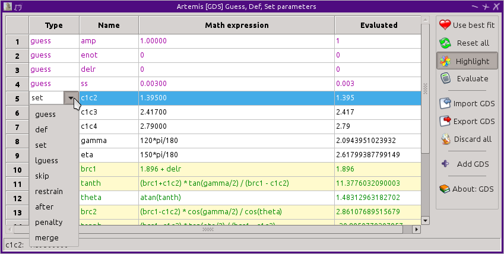

Home
Introduction
Starting Artemis
The Data window
The Atoms/Feff window
The Path page
The GDS window
Running a fit
The Plot window
The Log & Journal windows
The History window
Monitoring things
Managing preferences
This is the big trick in ARTEMIS:
The parameters of the EXAFS equation are not the parameters of the fit. The parameters of the EXAFS equation are written in terms of the parameters of the fit.
As a consequence, path parameter values are math expressions. These math expressions are functions of the actual fitting parameters.Some of these math expressions are quite simple. For example, in the gold metal example in the previous chapter, the math expressions for S²₀ and E₀ were simple function of a single parameter. The math expression for ΔR , however, was a function of alpha and reff, while the σ² math expression used the debye function and two parameters.
All of these parameters must be defined in the GDS window. This window contains a grid with a series of buttons down the right side. It is displayed and hidden using the GDS button on the left side of the Main window. Here are the contents of the GDS window from the gold metal example. The four variable parameters in the fit along with the fixed sample temperature needed by the debye function are shown. A new variable parameter is being defined in line 6.
The second, third, and fourth columns in the grid are filled by simple text boxes. The first column contains a drop down menu from which the parameter types can be chosen.
ARTEMIS GDS window. ">Every parameter of any type used in any math expression must be defined on the GDS widow. Any variable parameter defined on the GDS window must be used in a math expression.
There are 9 types of parameters in ARTEMIS. They are color coded in the grid to give you a visual indication of each parameter's type.
The stack of buttons on the right side of the GDS window contains many of the main functions of the GDS window. The “Use best fit” button makes the most recent best fit value into the initial guess for every guess parameter in the grid. The “Reset all” button tells IFEFFIT to reset all parameters to their initial values. The “Highlight” button prompts you for a string. All parameters with names or math expressions which match the string provided will be highlighted with a yellow background. This feature is particularly useful for large fitting models with many parameters.
The next two buttons are used to import or export a simple text file showing the definitions of all the parameters. The “Discard all” button does just that, after prompting to be sure that is what you want to do. Finally, the “Add a site” button appends a blank row to the end of the grid.
When one or more rows are selected, you can use the following keyboard shortcuts to change the parameter type of that set of parameters.
|
Clicking on a line in the grid selects the entire line. Control clicking of a line adds that line to the selection. Shift clicking adds all lines between the selected and clicked upon lines. Right clicking on any line in the grid, including the label containing the line number, will post the menu shown on the right. The top three items in the menu are used to copy, cut, and paste entire lines. The cut function is one way of discarding a parameter. The other is to simply delete the name. The insertion options complement the “Add a site” button by adding blank rows to the middle of the grid. The “Change selected” sub-menu is yet another way of changing the parameter type of the selected lines of the grid. The “Grab best fit” option makes the most recent best fit of the parameters in the selected lines into their initial guesses. The “Build restraint” option posts a dialog that helps you name and define a restraint based upon the value of the parameter in the line clicked upon. The “Annotate” option prompts you for a text string describing the parameter in the line clicked upon. This annotation is displayed in the GDS window's status bar when that line is selected. The “Find” option posts a small window with a text box reporting all GDS parameters and path parameters which have math expressions containing the parameter in the line clicked upon. The “Change globally” options allows you to rename a parameter and have its new name inserted every place in the fit where that parameter is used. Finally, the “Explain” submenu writes a short text to the status bar explaining the various parameter types. |

|